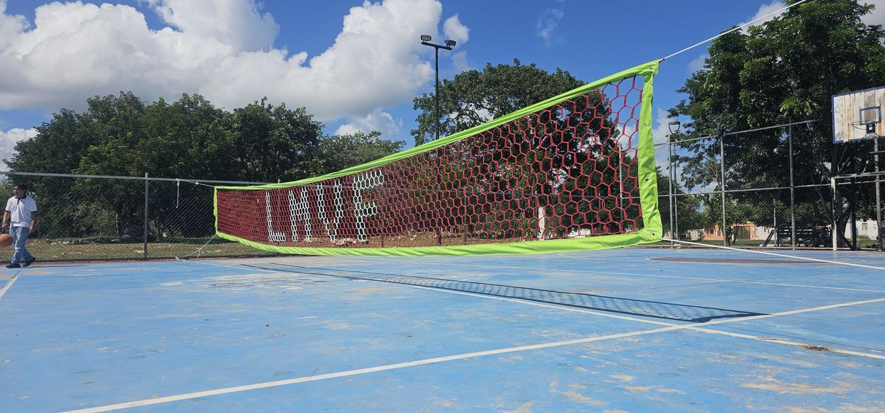
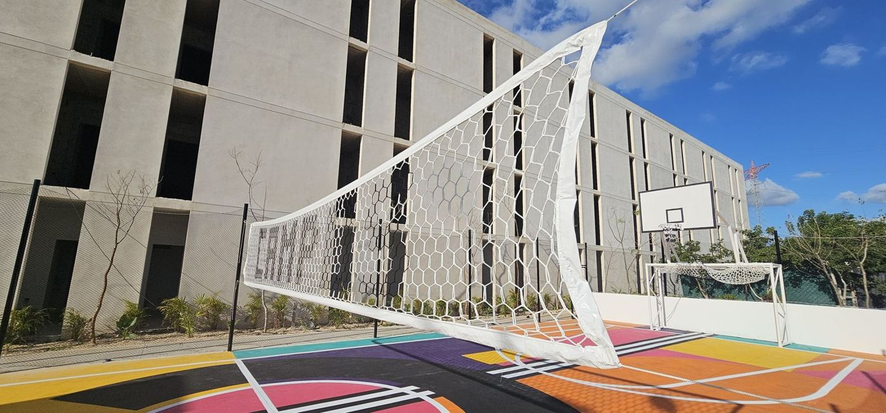

Cuando alguien busca una red de voleibol profesional, casi siempre quiere decir una de dos cosas: una red que cumpla el reglamento para competir, o una red de buena calidad, del tamaño correcto, que aguante el uso diario. No son lo mismo, y saber cuál necesitas te evita pagar de más o comprar algo que tu liga no acepta.
Las diferencias, lado a lado
| Red reglamentaria (FIVB) | Red RC personalizada | |
|---|---|---|
| Medida | 9.50 a 10 × 1 m | 9.5 o 10 × 1 m |
| Malla | Cuadrada de 10 cm, negra | Hexagonal de 10 cm, tejida a mano |
| Banda superior | Blanca, de 7 cm | Contorno de lona de 8 cm, en el color que elijas |
| Personalización | No | Colores de red y contorno, y letras tejidas |
| Para quién | Ligas y torneos que exigen red reglamentaria | Escuelas, clubes, hoteles, casas y torneos locales |
Cuándo necesitas la reglamentaria
Si tu equipo juega en una liga federada o en un torneo cuyo reglamento exige la red oficial, necesitas una de malla cuadrada que cumpla las Reglas Oficiales de la FIVB. Esa red no la fabricamos. Antes de comprar, pregunta a tu liga qué red piden.
Cuándo conviene una red personalizada
En la mayoría de las canchas de escuela, club, hotel o colonia nadie revisa si la malla es cuadrada. Ahí lo que importa es que la red tenga la medida correcta, que aguante el sol y los remates, y que se vea bien.
Nuestras redes de voleibol personalizadas tienen la medida profesional de 9.5 o 10 × 1 m, son de cordón de poliéster trenzado de 60 filamentos con contorno de lona de alta tenacidad, y se tejen a mano con el nombre de tu escuela, tu club o tu colonia, en tus colores.

También hemos hecho redes para voleibol de playa en hoteles y clubes: cuéntanos de tu cancha al cotizar.
Antes de comprar, revisa los postes
La red reglamentaria va a 2.43 m en varonil y 2.24 m en femenil. Si tus postes no llegan a esa altura o no permiten ajustarla, la red no va a quedar bien, sea cual sea. Las medidas completas están en medidas de la cancha y la red de voleibol.
Qué mandarnos para cotizar
- Largo: 9.5 o 10 m.
- Colores de la red y del contorno.
- Texto que quieres tejido, si lleva.
- Ciudad de entrega.
Preguntas frecuentes
¿Qué es una red de voleibol profesional?
En competencia se le llama así a la red que cumple las Reglas Oficiales de la FIVB: 1 m de ancho, de 9.50 a 10 m de largo, malla cuadrada negra de 10 cm, banda superior blanca de 7 cm y antenas.
¿Las redes de Grupo RC son reglamentarias?
No. Tienen la medida profesional de 9.5 o 10 × 1 m, pero el tejido es hexagonal, hecho a mano, y se personalizan con letras y colores. Son para escuelas, clubes, hoteles, casas y torneos locales.
¿Qué red necesito para una liga federada?
Una red que cumpla el reglamento que exija tu liga o federación, normalmente la de malla cuadrada de la FIVB. Esa no la fabricamos: confirma con tu liga qué piden.
¿Cuánto cuesta una red de voleibol personalizada?
Se cotiza por pieza, según el largo, los colores y las letras, con el envío incluido a todo México. Mándanos los datos por WhatsApp y te damos el precio.